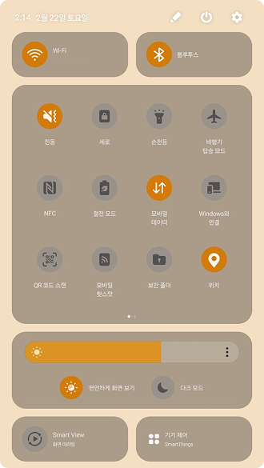

개념 학습
네트워크 환경 설정
모바일 운영체제에서 네트워크 설정
스마트폰도 개인용 컴퓨터처럼 DHCP를 사용하여 자동으로 네트워크를 설정할 수 있다.
-
스마트폰에서 연결된 Wi-Fi 옆의 설정 버튼을 누른다.
-
IP 설정에서 ‘DHCP’를 클릭하여 설정할 수 있다.
-
스마트폰에서 연결된 Wi-Fi 옆의 설정 버튼을 누른다.
-
<IP 구성>과 <DNS 구성>을 ‘자동’으로 선택하면 ‘DHCP’를 사용할 수 있다.
모바일 운영체제에서 네트워크 설정

DHCP 설정이 완료되었습니다.


DHCP 설정이 완료되었습니다.